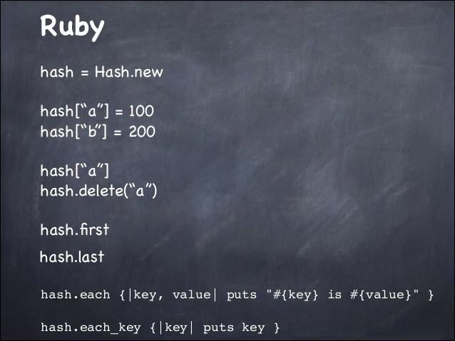

Journey Through Dev Bootcamp
To Be an Array or Hash?
FJ Collins Jr. - January 24th, 2016

Let's say you're beginning your journey to become a programmer and have dabbled in a little Ruby thus far. You have a basic understanding of fundamental concepts like local variables, input statements, output statements, methods, loops etc. You're finding out how to manipulate code and are being introduced to arrays and hashes. Both are very similar and unique at the same time and both can be very powerful tools used when writing Ruby. Let's take a look!
Arrays
An array allows a developer to store a collection of information in one variable. Let's say you had a list of favorite phrases you always says in certain situations - instead of storing one in its each individual local variable like so:
favorite_phrase1 = "YOLO!"
favorite_phrase2 = "That's what she said!"
favorite_phrase3 = "Bazinga"
...
favorite_phrases = ["YOLO!", "That's what she said!", "Bazinga"]
favorite_phrases[0]
favorite_phrases[1]
favorite_phrases[2]
"YOLO!", I would use favorite_phrases[0] and Ruby would know to output the first stored phrase which is "YOLO!" Obviously, this is a very basic example and most arrays you create will have more information stored. You can store not only strings, but integers/floats, hashes, other arrays, file handles, classes, booleans - pretty much any object! The contents of the array always remain in the same order unless you, the developer, explicitly remove, add or move objects around. Let us extend on our example of your favorite phrases and let's say we not only want to store them, but we want to know which phrase is said to which person. For arguments sake, each phrase has a specific person it is said to - how might we store the specific person that the phrase is said to... you guessed it, we use hashes!
Hashes
Hashes are also tools that store a collection of information, however they do it in pairs where each key has a value associated with it. Also, it is extremely important to know that keys are unique, but values can be repeated. In order to retrieve the value from the hash, you must use the key.
favorite_phrases {
"Nick" => "YOLO!"
"Catherine" => "That's what she said"
"Eric" => "Bazinga"
}
favorite_phrases[Nick]
favorite_phrases[Catherine]
favorite_phrases[Eric]
As you can see, the main difference between an array and a hash is the way information is stored - Arrays store it in a sequential ordered-index and the objects inside are referenced by those indexes - Hashes store information in pairs with a key and a value and you use those keys to reference the value pair. Simple right?
Additional Resources
Here is some additional resources that can give you some overview of Arrays & Hashes, as well as provide the ways to manipulate them accurately.
I hope you all enjoyed this post as it is one of many on my journey to become a software engineer. Please comment and ask any questions that arise - I will gladly respond. Thank you!